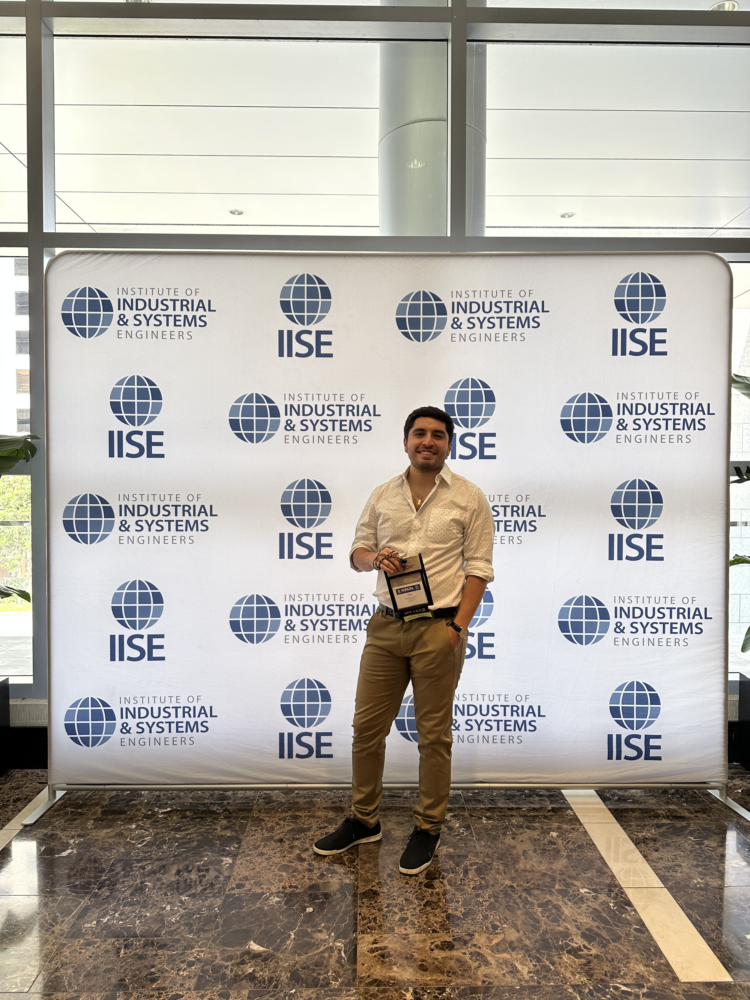

About Me
Hello! I’m Diego A. Polanco-Lahoz, a Ph.D. candidate in Systems and Engineering Management at Texas Tech University. My academic work bridges organizational resilience, engineering education, and systems thinking.
Prior to joining Texas Tech, I earned a B.S. and M.S. in Industrial Engineering from Pontificia Universidad Católica de Valparaíso in Chile. I’ve also worked as a business analyst and served as a research and teaching assistant in multiple contexts.
My goal is to develop practical frameworks for improving complex institutional systems—especially in higher education—through methods such as RAG and FRAM. I am committed to fostering inclusive, sustainable innovation through collaborative academic work.